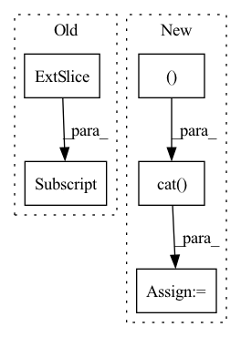

Pattern ID :563

Before Change
y[..., :5 + self.nc].sigmoid_()
if self.inplace:
y[..., 0:2] = (y[..., 0:2] * 2 + self.grid[i]) * self.stride[i] // xy
y[..., 2:4] = (y[..., 2:4] * 2) ** 2 * self.anchor_grid[i] // wh
else: // for YOLOv5 on AWS Inferentia https://github.com/ultralytics/yolov5/pull/2953
xy, wh, etc = y.split((2, 2, self.no - 4), 4) // tensor_split((2, 4, 5), 4) if torch 1.8.0
xy = (xy * 2 + self.grid[i]) * self.stride[i] // xy
After Change
xy, wh, conf = x[i].sigmoid().split((2, 2, self.nc + 1), 4)
xy = (xy * 2 + self.grid[i]) * self.stride[i] // xy
wh = (wh * 2) ** 2 * self.anchor_grid[i] // wh
y = torch.cat((xy, wh, conf), 4)
z.append(y.view(bs, self.na * nx * ny, self.no))
return x if self.training else (torch.cat(z, 1),) if self.export else (torch.cat(z, 1), x)
In pattern: SUPERPATTERN
Frequency: 3
Non-data size: 5
Instances
Fragment ID: 1993742
Project Name: ultralytics/yolov5
Commit Name: 060837406542c5c65301b8fde641f4d92a1f395e
Time: 2022-09-17
Author: glenn.jocher@ultralytics.com
File Name: models/yolo.py
M Class Name: Detect
N Class Name: Detect
M Method Name: forward(2)
N Method Name: forward(2)
M Parent Class: nn.Module
N Parent Class: nn.Module
M File Name: models/yolo.py
N File Name: models/yolo.py
M Start Line: 61
M End Line: 77
N Start Line: 58
N End Line: 77
'>
Before Change
mask_value = max_neg_value(q)
mask = torch.zeros((b * h, buckets, buckets), device=device).bool()
i, j = torch.triu_indices(buckets, buckets)
mask[:, 0, :] = True
mask[:, i, j] = True
R.masked_fill_(mask, mask_value)
R = R.softmax(dim=-1)
After Change
null_value_bucket = self.null_value[None, :, None, :, :].expand(b, -1, 1, bsz, -1).reshape(bh, 1, bsz, -1)
b_k_r = torch.cat((null_key_bucket, b_k), dim=1)
b_v_r = torch.cat((null_value_bucket, b_v), dim=1)
// reorder buckets to buckets of the past
b_k_r = reorder_buckets(b_k_r, R)
b_v_r = reorder_buckets(b_v_r, R)
// and concatenate to original buckets themselves for local attention
b_k = torch.cat((b_k_r, b_k), dim=2)
'>
Fragment ID: 1993748
Project Name: lucidrains/sinkhorn-transformer
Commit Name: 02446a9900a155b2512af5839f071ea84d292deb
Time: 2020-04-09
Author: lucidrains@gmail.com
File Name: sinkhorn_transformer/sinkhorn_transformer.py
M Class Name: SinkhornCausalAttention
N Class Name: SinkhornCausalAttention
M Method Name: forward(4)
N Method Name: forward(4)
M Parent Class: nn.Module
N Parent Class: nn.Module
M File Name: sinkhorn_transformer/sinkhorn_transformer.py
N File Name: sinkhorn_transformer/sinkhorn_transformer.py
M Start Line: 287
M End Line: 329
N Start Line: 297
N End Line: 345
'>
Before Change
)
logits = self.to_logits(transformer_output)
return logits[:, -self.image_seq_length:, :]
// def forward(self, text_tokens, seg_tokens, img_tokens):
After Change
seq_pos = self.seq_pos_embeddings(torch.arange(seg_tokens.shape[1], device=self.device))
seq_embeddings = self.seg_token_embedding(seg_tokens) + text_pos
embeddings = torch.cat((text_embeddings, seq_embeddings), dim=1)
if img_tokens is not None:
img_pos = self.get_image_pos_embeddings(img_tokens)
image_embeddings = self.image_embeddings(img_tokens) + img_pos
'>
Fragment ID: 1993744
Project Name: casualganpapers/make-a-scene
Commit Name: 029c4f7e4dc143f105af80e4437c1dd7a09bf91c
Time: 2022-06-16
Author: 87744278+thuangb@users.noreply.github.com
File Name: models/transformer.py
M Class Name: MakeAScene
N Class Name: MakeAScene
M Method Name: forward(4)
N Method Name: forward(4)
M Parent Class: nn.Module
N Parent Class: nn.Module
M File Name: models/transformer.py
N File Name: models/transformer.py
M Start Line: 314
M End Line: 334
N Start Line: 329
N End Line: 352